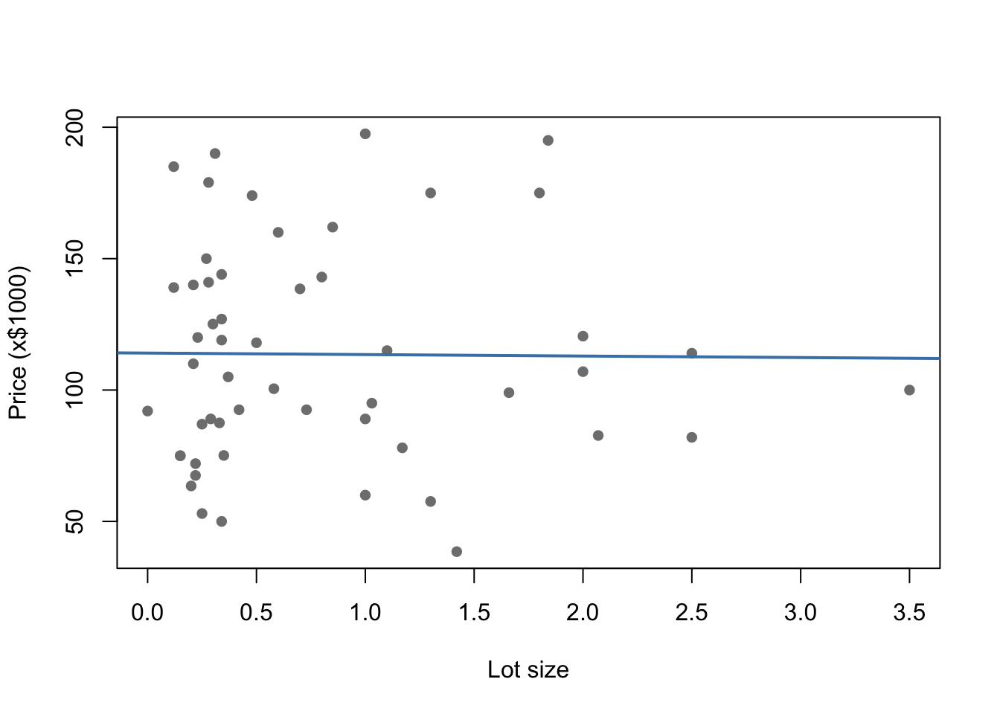
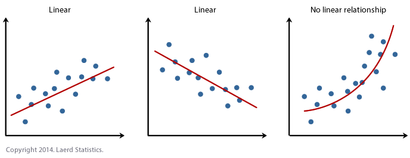
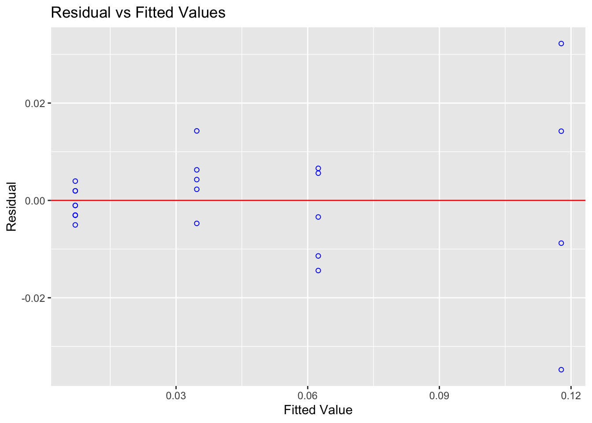
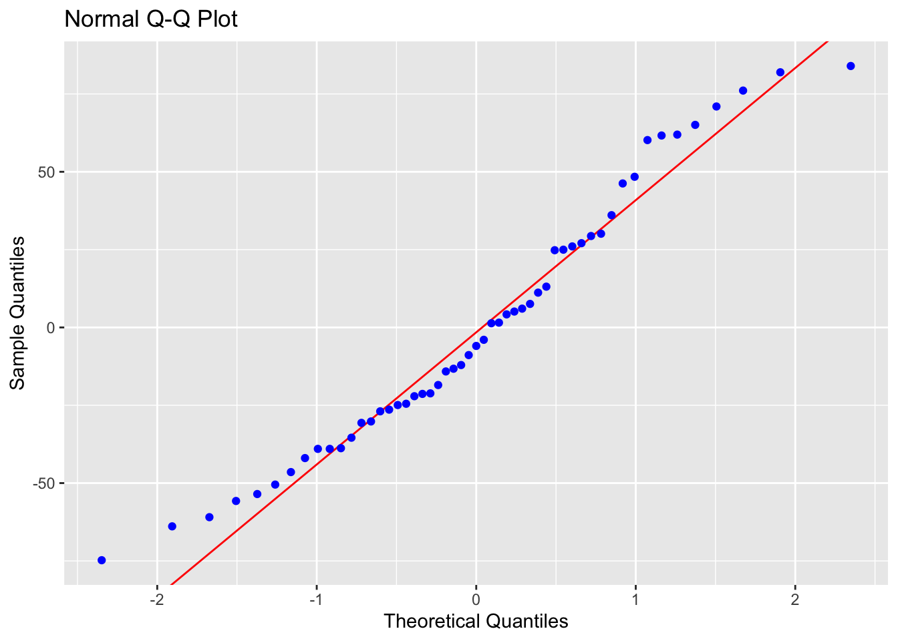

Chapter 12 Simple Linear Regression
By this point your data should be ready: categorical columns converted to factors, missing data dealt with, and a QC check done. Now we fit the model.
We will use the HousesNY dataset throughout. Our question: can lot size predict house sale price?
12.1 Running the model
The command for linear regression in R is lm() — short for linear model.
The ~ symbol means “is modelled by” or “depends on”. Think of it as the equals sign in your regression equation: y is on the left, x is on the right. So this line of code is saying
Get the “tablename” spreadsheet. Then run a simple linear regression model (lm) where were use the the data in the column called “x_column” to predict the data in the column called “y_column”. Rather than print out the results on the screen, save the model to an object called “output”.
12.1.1 Example
For the HousesNY data, predicting Price from Lot and saving the result to an object called Model1.lm
Note: Always save your model to an object with
<-. You will need it for every subsequent step — summaries, plots, diagnostics. If you just runlm(...)without saving it, the output is lost.
12.1.2 Important
DO NOT USE $ WHEN YOU RUN THIS COMMAND! Always put the name of the table under data. It will run if you use $ but later things break.
12.2 Model Outputs
12.2.0.1 Quick look
Typing the name of your model and running the code chunk will show the formula and coefficients, but not much else
##
## Call:
## lm(formula = Price ~ Lot, data = HousesNY)
##
## Coefficients:
## (Intercept) Lot
## 114.0911 -0.5749There are also some more detailed summaries. Both summaries contain the same information — use whichever is easier to read. In practice it is useful to have both available, which is why we saved the model as Model1.lm and can pass it to either function.
12.2.0.2 Standard summary
For the full output, use summary() on your model.
##
## Call:
## lm(formula = Price ~ Lot, data = HousesNY)
##
## Residuals:
## Min 1Q Median 3Q Max
## -74.775 -30.201 -5.941 27.070 83.984
##
## Coefficients:
## Estimate Std. Error t value Pr(>|t|)
## (Intercept) 114.0911 8.3639 13.641 <2e-16 ***
## Lot -0.5749 7.6113 -0.076 0.94
## ---
## Signif. codes: 0 '***' 0.001 '**' 0.01 '*' 0.05 '.' 0.1 ' ' 1
##
## Residual standard error: 41.83 on 51 degrees of freedom
## Multiple R-squared: 0.0001119, Adjusted R-squared: -0.01949
## F-statistic: 0.005705 on 1 and 51 DF, p-value: 0.9401and the ANOVA table
## Analysis of Variance Table
##
## Response: Price
## Df Sum Sq Mean Sq F value Pr(>F)
## Lot 1 10 9.98 0.0057 0.9401
## Residuals 51 89245 1749.9112.2.0.3 The ols_regress() summary
The olsrr package provides an alternative summary with a cleaner layout. Remember to first install the olsrr package and to add library(olsrr) to your library code chunk at the top of your script.
## Model Summary
## -----------------------------------------------------------------
## R 0.011 RMSE 41.035
## R-Squared 0.000 MSE 1683.876
## Adj. R-Squared -0.019 Coef. Var 36.813
## Pred R-Squared -0.068 AIC 550.137
## MAE 34.152 SBC 556.048
## -----------------------------------------------------------------
## RMSE: Root Mean Square Error
## MSE: Mean Square Error
## MAE: Mean Absolute Error
## AIC: Akaike Information Criteria
## SBC: Schwarz Bayesian Criteria
##
## ANOVA
## --------------------------------------------------------------------
## Sum of
## Squares DF Mean Square F Sig.
## --------------------------------------------------------------------
## Regression 9.983 1 9.983 0.006 0.9401
## Residual 89245.412 51 1749.910
## Total 89255.395 52
## --------------------------------------------------------------------
##
## Parameter Estimates
## -------------------------------------------------------------------------------------------
## model Beta Std. Error Std. Beta t Sig lower upper
## -------------------------------------------------------------------------------------------
## (Intercept) 114.091 8.364 13.641 0.000 97.300 130.882
## Lot -0.575 7.611 -0.011 -0.076 0.940 -15.855 14.705
## -------------------------------------------------------------------------------------------Important:
ols_regress()only works if you usedlm(y ~ x, data = tablename). If you used the$operator (e.g.lm(data$y ~ data$x)), it will break. This is one reason to always use thedata =argument.
12.3 Writing the regression equation
12.3.0.1 Population vs sample notation
There are two versions of the regression equation, and it matters which one you write.
The population equation describes the true underlying relationship we are trying to estimate. We rarely if ever know these values — they are population parameters. Here’s the equation and here’s how to write it yourself.
For an individual value in your population, you have the model output plus some error/residual.
\[ y_i = model_i + \varepsilon_i \]
\[ y_i = \beta_0 + \beta_1 x_i + \varepsilon_i \]
Under the linear regression model, we assume that the population mean of y, \(\mu_y\), changes linearly as you increase x:
\[ \mu_y = \beta_0 + \beta_1 x \]
The sample equation describes our estimated line from the data. The hats (^) indicate these are estimates:
\[ \hat{y} = b_0 + b_1 x \]
You don’t need to use x and y if it’s clearer to use the variable names e.g.
\[ \mu_{price} = \beta_0 + \beta_1 LotSize \]
\[ \hat{\text{Price}} = b_0 + b_1 \times \text{LotSize} \]
Where price is in $1000USD and LotSize is in metres squared.
12.3.0.2 Filling in the numbers
From the model output, the intercept (\(b_0\)) is 114.0911 and the slope (\(b_1\)) is -0.5749. So the fitted SAMPLE equation is:
\[ \hat{\text{Price}} = 114.09 - 0.5749 \times \text{LotSize} \]
Where price is in $1000USD and LotSize is in metres squared.
12.3.0.3 Writing these equations yourself
To write equations in R Markdown, put $$ and bottom for a centred display equation. The $$ at the top and bottom tells R that this is an equation
You should NOT do this in a code chunk. This is part of your word processing/report writing, so you WRITE THEM IN THE TEXT.
Here are the symbols you will need most often:
| What you want | What to type |
|---|---|
| \(\hat{y}\) | \hat{y} |
| \(\beta_0\) | \beta_0 |
| \(\beta_1\) | \beta_1 |
| \(\varepsilon\) | \varepsilon |
| \(\times\) | \times |
| Subscript e.g. \(x_i\) | x_i |
| Superscript e.g. \(R^2\) | R^2 |
Below I have written out all the equations above for you to have a look at how I did it (with some notes). First…
- $$ means start/end equation
- _ means “subscript
$$
y_i = model_i + \varepsilon_i
$$\means “special symbol” for example greek letters e.g. makes the curly B. We are using LateX, so you can look them up.
$$
y_i = \beta_0 + \beta_1 x_i + \varepsilon_i
$$- You can combine these commands, so
\mu_ymeans special symbol \(\mu\), with a subscript y.
$$
\mu_y = \beta_0 + \beta_1 x
$${ }means “do something” to the stuff inside. e.g. means “put a little hat on y”
$$
\hat{y} = b_0 + b_1 x
$$- In this case, I needed the { } to make the computer realise I wanted the entire word price as subscript
$$
\mu_{price} = \beta_0 + \beta_1 LotSize
$$\textmakes the font look different
$$
\hat{\text{Price}} = b_0 + b_1 \times \text{LotSize}
$$- Finally, when you write out your own coefficients, remember you are typing the numbers, so check for typos!
$$
\hat{\text{Price}} = 114.2TYPO - 0.5749 \times \text{Lot}
$$12.4 Interpreting slope and intercept
12.4.0.1 The sample intercept (\(b_0 = 114.09\))
The intercept is the average value of \(y\) when \(x = 0\). In this case: a house with a lot size of zero metres squared would be predicted to sell for $114,090 on average
Whether this is meaningful depends on context. A lot size of zero is not realistic for a house, so here the intercept is a mathematical anchor for the line rather than a practically useful estimate. Always ask: is x = 0 a sensible value in this context?. See the lab 2 worked answers for more!
12.4.0.2 The sample slope (\(b_1 = -0.5749\))
The sample slope is the predicted change in the average \(y\) for each one-unit increase in \(x\). Here: for each additional metre-squared of lot size, the predicted average sale price decreases by $575.
The negative slope is worth thinking about — it is counterintuitive. This might reflect confounding variables not in the model (e.g. larger lots may be in more rural, lower-value areas). This is why we check assumptions and consider multiple predictors.
12.5 Significance tests
12.5.1 Is the slope or intercept significantly different from zero?
The summary() output includes a t-test for each coefficient. The hypotheses are:
- For the slope: \(H_0: \beta_1 = 0\) (lot size has no linear relationship with price)
- For the intercept: \(H_0: \beta_0 = 0\) (the line passes through the origin)
The test statistic is:
\[ t = \frac{b_1 - 0}{SE(b_1)} \]
R calculates this automatically. In the summary() output, look at the Coefficients table:
Estimate— the value of \(b_0\) or \(b_1\)Std. Error— the standard error of the estimatet value— the test statisticPr(>|t|)— the two-sided p-value
##
## Call:
## lm(formula = Price ~ Lot, data = HousesNY)
##
## Residuals:
## Min 1Q Median 3Q Max
## -74.775 -30.201 -5.941 27.070 83.984
##
## Coefficients:
## Estimate Std. Error t value Pr(>|t|)
## (Intercept) 114.0911 8.3639 13.641 <2e-16 ***
## Lot -0.5749 7.6113 -0.076 0.94
## ---
## Signif. codes: 0 '***' 0.001 '**' 0.01 '*' 0.05 '.' 0.1 ' ' 1
##
## Residual standard error: 41.83 on 51 degrees of freedom
## Multiple R-squared: 0.0001119, Adjusted R-squared: -0.01949
## F-statistic: 0.005705 on 1 and 51 DF, p-value: 0.9401If the p-value is below your significance threshold (typically 0.05), you reject \(H_0\) and conclude the coefficient is significantly different from zero.
12.5.2 Confidence intervals on slope and intercept
To get 95% confidence intervals for both coefficients:
## 2.5 % 97.5 %
## (Intercept) 97.29998 130.88227
## Lot -15.85529 14.70549To change the confidence level (e.g. 99%):
## 0.5 % 99.5 %
## (Intercept) 91.71177 136.47049
## Lot -20.94071 19.79091The confidence interval gives a range of plausible values for the true population parameter. If the interval for \(\beta_1\) does not include zero, this is consistent with rejecting \(H_0: \beta_1 = 0\) at the corresponding significance level.
12.5.3 Testing against a non-zero value
Sometimes the hypothesis of interest is not whether the slope equals zero, but whether it equals some other specific value.
How likely is it that the real price decreases by exactly $2000 per square m of lot size).
\(H_0: \beta_1 = -2\) \(H_1: \beta_1 != -2\)
R does not do this automatically, so you calculate the t-statistic manually:
\[ t = \frac{b_1 - \beta_{1}fromH_0}{se(b_1)} \]
where \(\beta_{1}\) is the hypothesised value of the population slope from our experiment, \(b_1\) is the sample slope that we actually see and se is the standard error on our sample slope. Step by step:
# First, extract the coefficients and standard errors from the model. the easiest way is to use olsrr
Model1.summary <- ols_regress(Model1.lm)
Model1.Coefficients <- Model1.summary$betas
Model1.StandardError <- Model1.summary$std_errors
# we're looking at the slope - and our x predictor is called Lot, so
b1 <- Model1.Coefficients["Lot"]
se_b1 <- Model1.StandardError["Lot"]
# in case you need to test the intercept
b0 <- Model1.Coefficients["(Intercept)"]
se_b0 <- Model1.StandardError["(Intercept)"]
# In our test, we asked if the slope was different to -2
# Hypothesised value
beta1_H0 <- -2
# Calculate t statistic
t_stat <- (b1 - beta1_H0) / se_b1
t_stat## Lot
## 0.1872342Then calculate the two-sided p-value, using the residual degrees of freedom from the model:
We also need the residual degrees of freedom from the model (n-2). Many ways you can calculate this!
and calcualte the probablity
## Lot
## 0.8522199Confidence interval reframe: an equivalent approach is to check whether your hypothesised value falls inside the confidence interval from confint(). If \(\beta_{1,0} = -1\) lies outside the 95% CI, you reject \(H_0\) at \(\alpha = 0.05\). This gives the same conclusion as the t-test and is often easier to communicate.
12.6 The F-test and ANOVA table
The F-test asks a broader question than the individual t-tests: does the model as a whole explain a significant amount of variance in y? For simple linear regression with one predictor, the F-test and the t-test for the slope are equivalent — but this will matter more when you move to multiple regression.
The ANOVA table breaks the total variance in \(y\) into:
- Regression SS — variance explained by the model
- Residual SS — variance left unexplained
To get the ANOVA table, look at the olsrr output or type
## Analysis of Variance Table
##
## Response: Price
## Df Sum Sq Mean Sq F value Pr(>F)
## Lot 1 10 9.98 0.0057 0.9401
## Residuals 51 89245 1749.91The F-statistic is the ratio of the mean regression SS to the mean residual SS. A large F (small p-value) means the model explains significantly more variance than would be expected by chance.
The F-statistic and its p-value also appear at the bottom of summary(Model1.lm) output — both routes give the same result.
12.7 \(R^2\) and \(r\)
12.7.0.1 \(R^2\) — coefficient of determination
\(R^2\) tells you the proportion of variance in \(y\) explained by the model. It ranges from 0 (model explains nothing) to 1 (model explains everything).
## [1] 0.0001118517For example, \(R^2 = 0.08\) would mean that lot size explains 8% of the variation in house price.
The adjusted \(R^2\) penalises for adding extra predictors and is more appropriate when comparing models:
## [1] -0.0194938Both values appear in the summary() output under Multiple R-squared and Adjusted R-squared.
12.7.0.2 \(r\) — Pearson’s correlation coefficient
For simple linear regression (one predictor), \(r\) is simply the square root of \(R^2\), with the sign taken from the slope:
## Lot
## -0.01057599\(r\) ranges from -1 to 1. It measures the strength and direction of the linear relationship between \(x\) and \(y\).
You can also calculate \(r\) directly using cor():
## [1] -0.01057599Both should give the same value. Note that \(r\) and \(R^2\) are related by \(R^2 = r^2\) — so if \(r = -0.29\), then \(R^2 = 0.084\).
12.8 Plotting the regression line
12.8.0.1 Quick plot — base R
For a fast check during analysis, base R is the quickest option:
plot(Price ~ Lot, data = HousesNY,
xlab = "Lot size", ylab = "Price (x$1000)",
pch = 16, col = "grey50")
abline(Model1.lm, col = "steelblue", lwd = 2)
12.8.0.2 Publication plot — ggplot
For a report or presentation, use ggplot2:
ggplot(HousesNY, aes(x = Lot, y = Price)) +
geom_point(colour = "grey50", alpha = 0.7) +
geom_smooth(method = "lm", colour = "steelblue", se = TRUE) +
labs(x = "Lot size",
y = "Price (x$1000)",
title = "House price vs lot size",
subtitle = "Shaded band = 95% confidence interval on the mean") +
theme_bw()
se = TRUE adds a shaded confidence band around the line. Set se = FALSE to remove it.
Note:
geom_smooth(method = "lm")fits its own line internally — it is not using your savedModel1.lmobject. For simple regression this makes no difference, but if your model includes transformations or additional terms, usegeom_abline()with the coefficients from your model instead.
12.9 Checking LINE assumptions
From lectures, linear regression relies on four assumptions — summarised as LINE:
- Linearity — the relationship between \(x\) and \(y\) is linear
- Independence — the errors are independent of each other
- Normality — the errors are normally distributed
- Equal variance (homoscedasticity) — the errors have constant variance
Independence is usually assessed from study design rather than plots. The other three can be checked using residual plots.
12.9.1 Checking Linearity
What to look for: a random cloud of points in the residuals vs fitted plot. A curve or systematic pattern means a straight line is not the right model.


Expand to see an example where linearity is broken
This example uses treadwear data where the raw scatterplot looks approximately linear — but the residuals reveal a clear curve:
treadwear <- read.csv("/Users/hgreatrex/Documents/GitHub/Teaching/STAT-462/Stat462-2026/index_data/treadwear.csv")
tread_model <- lm(mileage ~ groove, data = treadwear)
ols_plot_resid_fit(tread_model)
Figure 12.1: The residuals show a clear parabolic pattern — a linear model is not appropriate here
The residuals are systematically positive at low and high fitted values, and negative in the middle. A non-linear model would be more appropriate.
12.9.2 Checking Equal Variance (Homoscedasticity)
What to look for: the spread of residuals should stay roughly constant across all fitted values. A fan shape or bow-tie means variance is unequal.


You can also run a formal test. The F-test assumes residuals are independent and identically distributed:
##
## F Test for Heteroskedasticity
## -----------------------------
## Ho: Variance is homogenous
## Ha: Variance is not homogenous
##
## Variables: fitted values of Price
##
## Test Summary
## --------------------------
## Num DF = 1
## Den DF = 51
## F = 0.00352732
## Prob > F = 0.9528726A small p-value suggests the population may not have equal variance.
Expand to see an example where equal variance is broken
alphapluto <- read.table("/Users/hgreatrex/Documents/GitHub/Teaching/STAT-462/Stat462-2026/index_data/alphapluto.txt", sep = "\t", header = TRUE)
alpha_model <- lm(alpha ~ pluto, data = alphapluto)
ols_plot_resid_fit(alpha_model)
Figure 12.2: Clear fanning — variance increases with fitted values
##
## F Test for Heteroskedasticity
## -----------------------------
## Ho: Variance is homogenous
## Ha: Variance is not homogenous
##
## Variables: fitted values of alpha
##
## Test Summary
## ----------------------------
## Num DF = 1
## Den DF = 21
## F = 16.37716
## Prob > F = 0.000580871212.9.3 Checking Normality of Residuals
What to look for: residuals that follow a roughly normal distribution. Check with a Q-Q plot and histogram.

Note: Normality matters mainly for p-values and confidence intervals in small samples. With \(n > 200\), the Central Limit Theorem means mild non-normality has little practical effect. Never discard data just because this assumption is mildly broken.


## -----------------------------------------------
## Test Statistic pvalue
## -----------------------------------------------
## Shapiro-Wilk 0.9638 0.1078
## Kolmogorov-Smirnov 0.0916 0.7658
## Cramer-von Mises 4.4591 0.0000
## Anderson-Darling 0.5791 0.1257
## -----------------------------------------------Points on the Q-Q plot should follow the diagonal line. The histogram should be approximately bell-shaped. For the Shapiro-Wilk test, a large p-value (fail to reject \(H_0\)) means no strong evidence against normality.
Expand: what if normality is broken?
If you have a large sample (\(n > 200\)), mild departures from normality are generally not a concern. For smaller samples, options include:
- Transforming the response variable (e.g. log transformation)
- Using a generalised linear model (GLM) with an appropriate distribution
- Using bootstrap confidence intervals
These are covered in later tutorials.
12.9.4 Checking Independence
Independence of errors cannot be checked with a residual plot — it depends on how the data were collected. Ask yourself:
- Are observations from the same subject, location, or time point repeated? (→ not independent)
- Is there a time or spatial order to the data that could cause nearby values to be related?
For cross-sectional data collected independently (like the HousesNY sample), independence is usually a reasonable assumption. If you have time series, spatial, or clustered data, independence needs to be explicitly modelled.